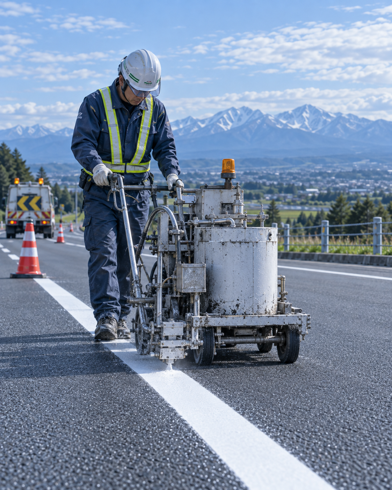
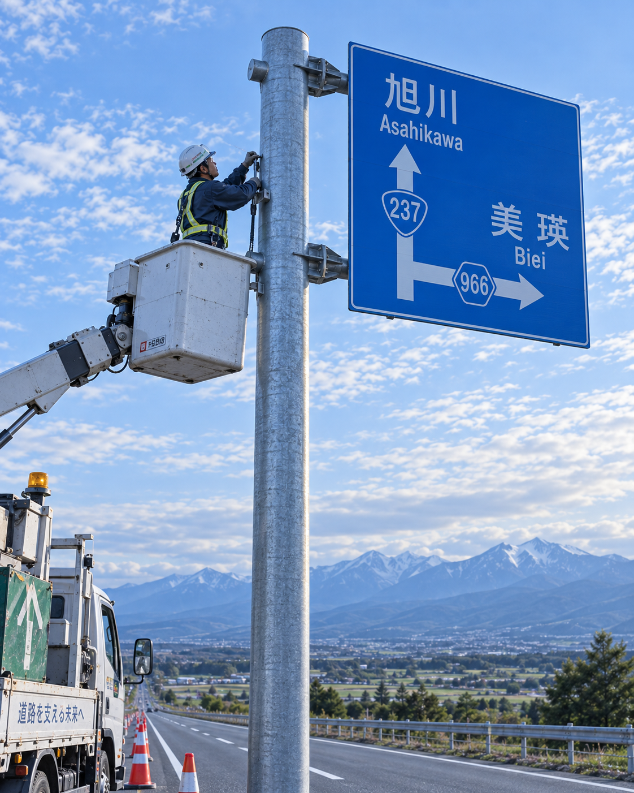
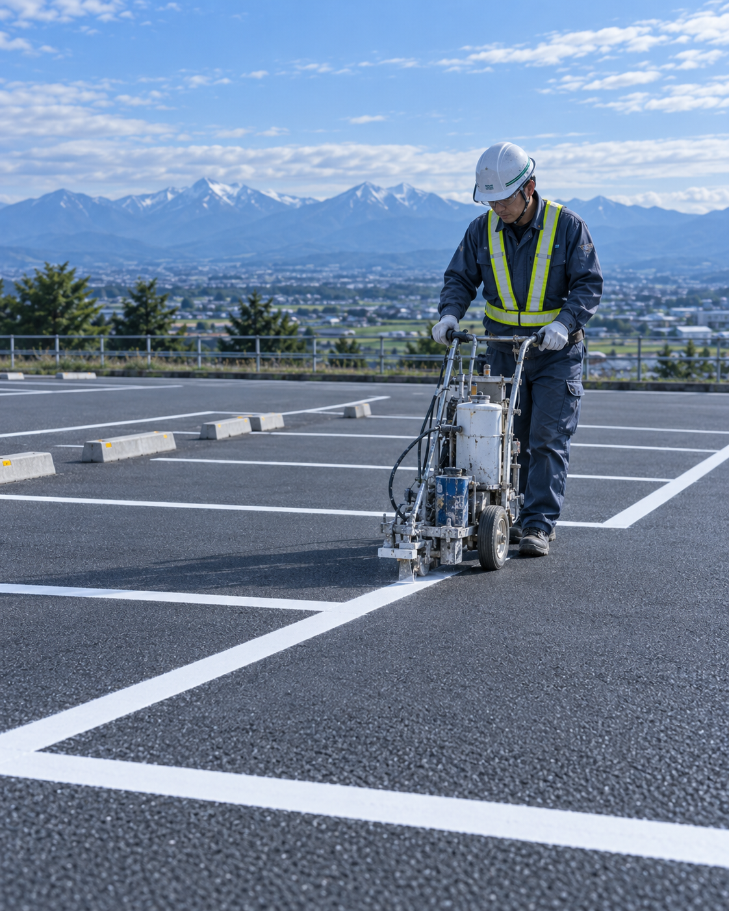

Business
事業内容
開発産業は、道路の「線」と「標識」に特化した専門会社です。国道・道道の交通安全施設工事から、市町村の道路整備、店舗・事業所の駐車場区画線まで、公共・民間を問わず対応します。
01
道路区画線工事
道路の中央線・外側線・車道外側線・導流帯、横断歩道や停止線などの路面標示、はみ出し禁止線、自転車通行空間の路面標示など、道路の区画線・標示全般を施工します。国道・道道の交通安全施設工事や、防災・安全交付金事業などの実績があります。
- 区画線（中央線・外側線・車線境界線 ほか）
- 路面標示（横断歩道・停止線・矢印・文字 ほか）
- はみ出し禁止線・規制標示
- 自転車通行空間の路面標示
- ロードマーク（区画線）の塗替 など
主な発注者：北海道開発局／各総合振興局／札幌市ほか市町村


02
道路標識設置工事
規制標識・指示標識・警戒標識・案内標識などの新設・更新・撤去に対応します。反射式の大型標識や、可変灯火式標識の撤去・更新など、交通管理者向けの工事実績も豊富です。基礎工事から標識柱の建込み、標識板の取り付けまで一貫して施工します。
- 道路標識の新設・建替・更新・撤去
- 反射式大型標識の更新
- 可変灯火式標識の撤去・更新
- 標識基礎工事・標識柱建込み
主な発注者：北海道警察本部・各方面本部／市町村
03
駐車場区画線工事
店舗・事業所・マンション・工場などの駐車場の白線・区画線を施工します。新設はもちろん、薄くなった線の引き直し、レイアウト変更、身障者用スペースや進行方向の表示などにも対応します。民間のお客様からのご依頼を歓迎しており、お見積もりは無料です。
- 駐車枠（白線）の新設・引き直し
- 区画レイアウトの変更
- 身障者用駐車スペース・進行方向表示
- ナンバリング・文字入れ

Flow
お問い合わせから施工まで（民間工事の場合）
お問い合わせ
フォームまたはお電話で、工事の場所・内容・おおよその面積をお知らせください。
現地調査・お見積もり
現地を確認し、無料でお見積もりをご提示します。
ご契約・日程調整
内容にご了承いただいたのち、施工日を調整します。
施工
安全管理を徹底し、天候を見ながら施工します。
完了確認・お引き渡し
仕上がりをご確認いただき、お引き渡しとなります。